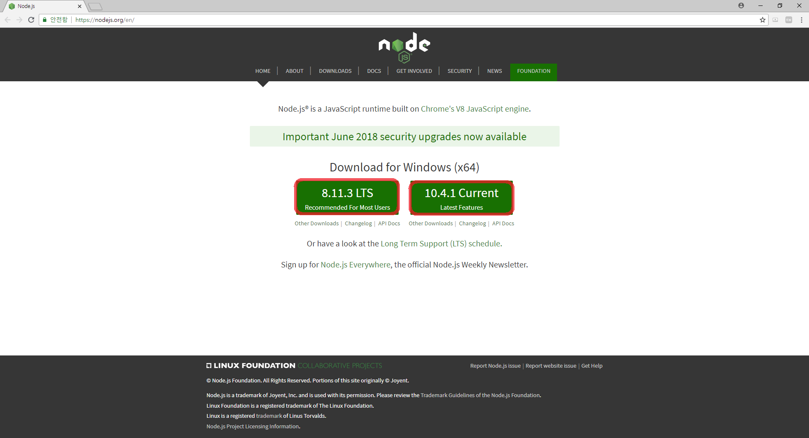
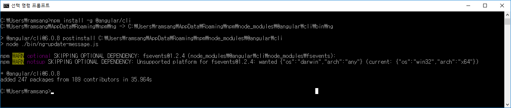

이번 장에서는 CLI를 이용해 만든 Angular 파일 구조를 살펴보면서 화면에 Hello World가 나오도록 수정해보겠습니다.
Angular CLI를 사용하여 프로젝트를 생성하면 아래와 같은 파일 구조의 스캐폴딩이 생성됩니다.
{% raw %}
│ .editorconfig
│ .gitignore
│ angular.json
│ package-lock.json
│ package.json
│ README.md
│ tsconfig.json
│ tslint.json
│
├─e2e
│ │ protractor.conf.js
│ │ tsconfig.e2e.json
│ │
│ └─src
│ app.e2e-spec.ts
│ app.po.ts
│
├─node_modules
│
│
└─src
│ browserslist
│ favicon.ico
│ index.html
│ karma.conf.js
│ main.ts
│ polyfills.ts
│ styles.css
│ test.ts
│ tsconfig.app.json
│ tsconfig.spec.json
│ tslint.json
│
├─app
│ app.component.css
│ app.component.html
│ app.component.spec.ts
│ app.component.ts
│ app.module.ts
│
├─assets
│
└─environments
environment.prod.ts
environment.ts
{% endraw %}
Angular 프로젝트는 컴포넌트, 디렉티브, 서비스, 모듈 등 Angular 구성요소와 각종 설정 파일로 구성된다. src 폴더는 Angular의 모든 구성요소, 공통 CSS, 이미지나 폰트와 같은 정적 파일, 설정 파일 등 애플리케이션 필수 파일을 담고 있다.
nodejs homepage로 이동해서 node 설치하기

명령 프롬프트 열고 npm install -g @angular/cli 명령어 입력하기
cf) 윈도우키를 누르고 cmd를 입력하면 간편하게 열 수 있습니다.

Next Chapter....
Chapter 03
- CLI로 만들어진 Angular 프로젝트 구조보기
- 간단하게 화면에 Hello World 찍어보기